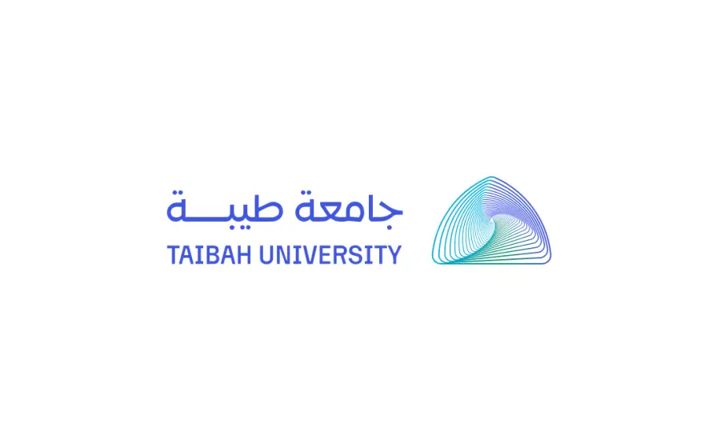
Bachelor of Computer Science 2022-2026
Taibah University · Al Madinah
GPA: 4.94 / 5.0 · First-Class Honours · Ranked 3rd in Cohort
I'm Hadeel Saud Al-Hazmi, a Junior AI Engineer and Computer Science graduate with hands-on experience building full-stack AI systems, RAG pipelines, agentic workflows, and backend services. I work with Python, FastAPI, OpenAI API, n8n, Supabase, and modern AI tooling — and I also enjoy turning technical ideas into clear, practical learning experiences.

GPA: 4.94 / 5.0 · First-Class Honours · Ranked 3rd in Cohort
A selection of AI systems, RAG, observability, machine learning, and Arabic NLP work.
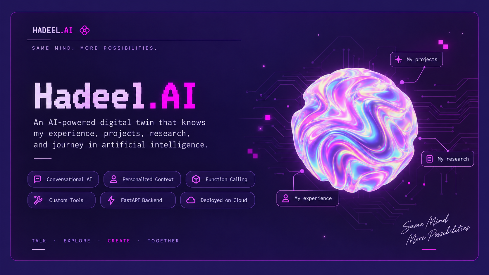
A full-stack 100% Python-based AI Digital Twin with a custom FastAPI backend and Jinja2 frontend, OpenAI function calling, conversation-history management, opportunity/contact capture, and unanswered-question logging.
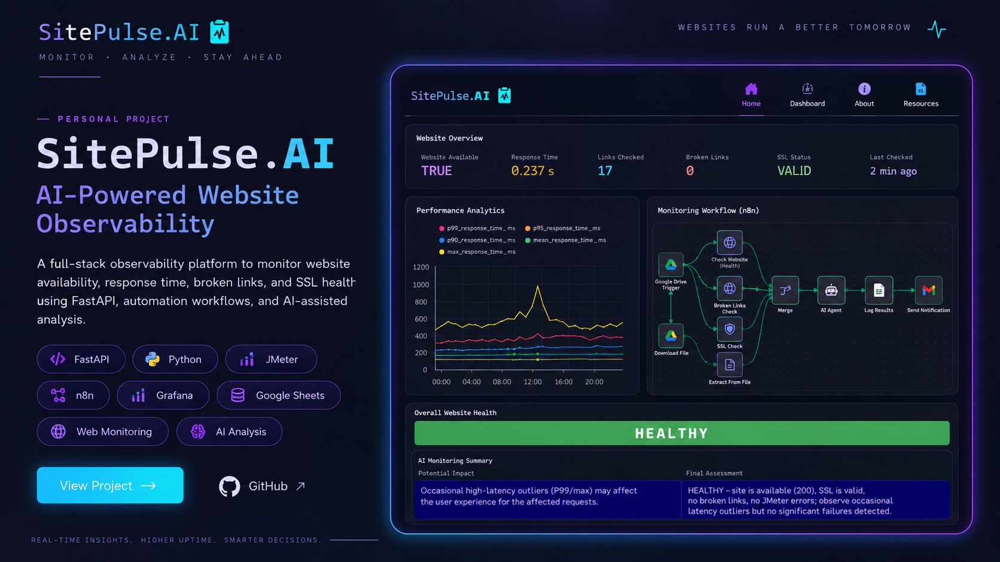
A full-stack observability platform for website health, response time, broken-link, and SSL monitoring, with FastAPI APIs, a custom frontend, JMeter load testing, n8n automation, Grafana visualization, and Render deployment.
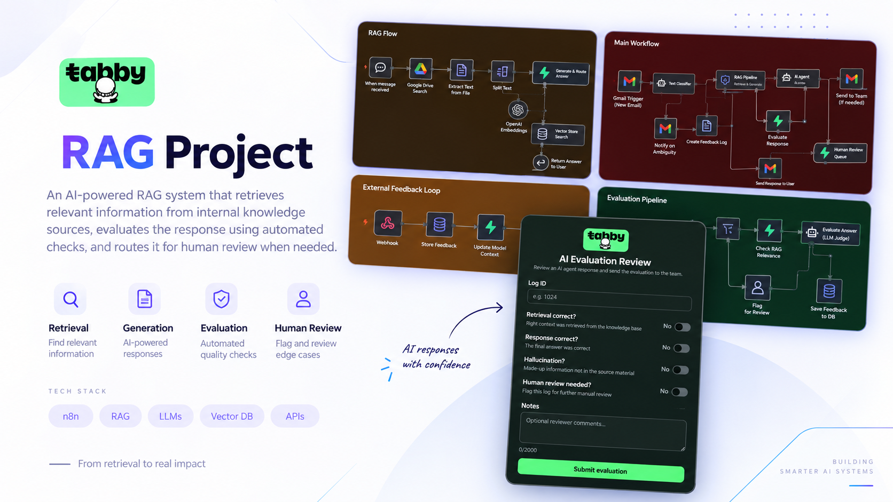
An end-to-end RAG customer-support pipeline integrating Gmail, classification, guardrails, an AI Agent, and a Supabase Vector Store. Built with automated knowledge-base synchronization and human-in-the-loop feedback.
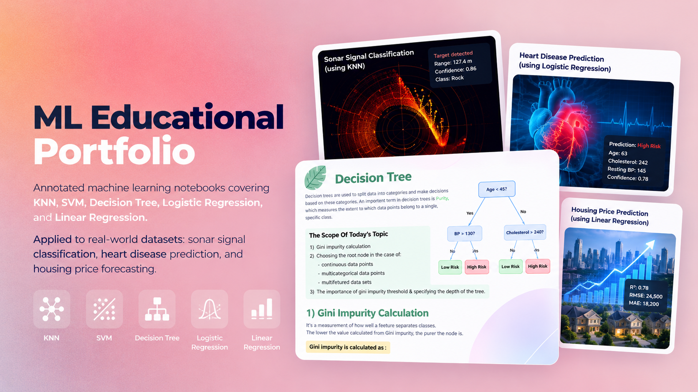
An educational machine learning website featuring annotated notebooks that explain KNN, SVM, Decision Tree, Logistic Regression, and Linear Regression through practical examples and real-world datasets.
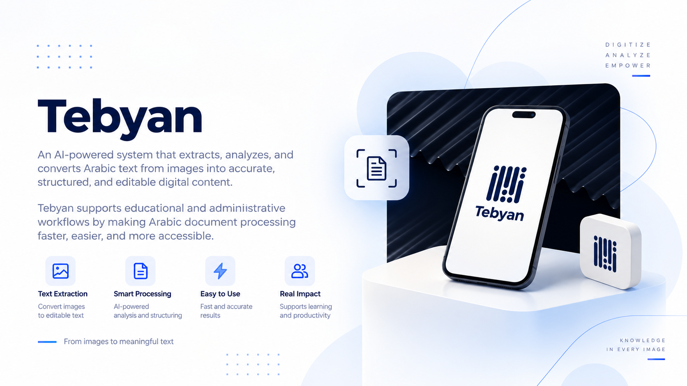
A low-resource Arabic handwriting project combining GAN-based handwriting synthesis with OCR recognition. I led the GANs team and developed a distribution-aware training approach.
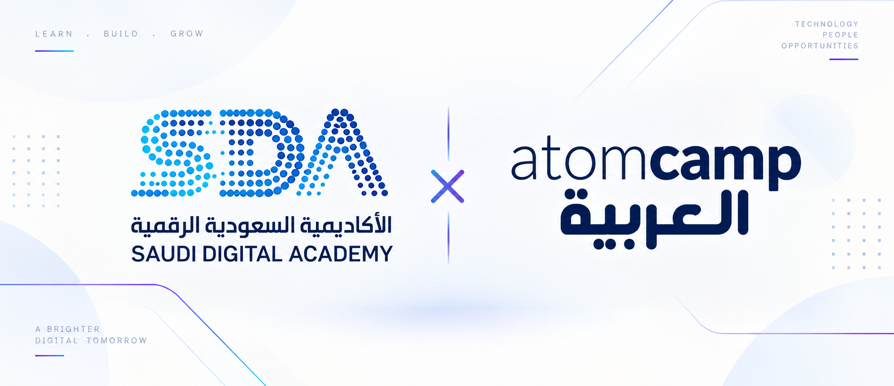
Delivered AI/Agents training to 25 gifted students, mentored teams through development and deployment, and taught agent design, edge cases, AI ethics, prompt/context engineering, and ML fundamentals.
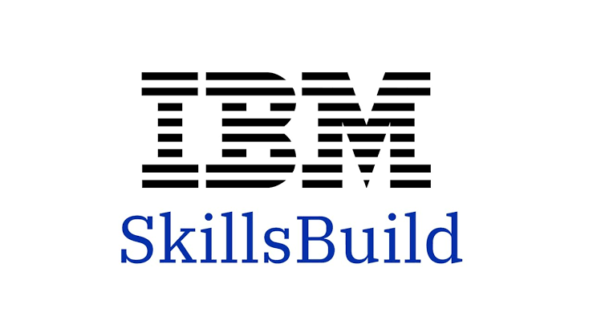
Developed and delivered AI/ML educational content covering supervised and unsupervised learning, deep learning, and applied ML systems, reaching 2,500+ participants across Saudi Arabia.
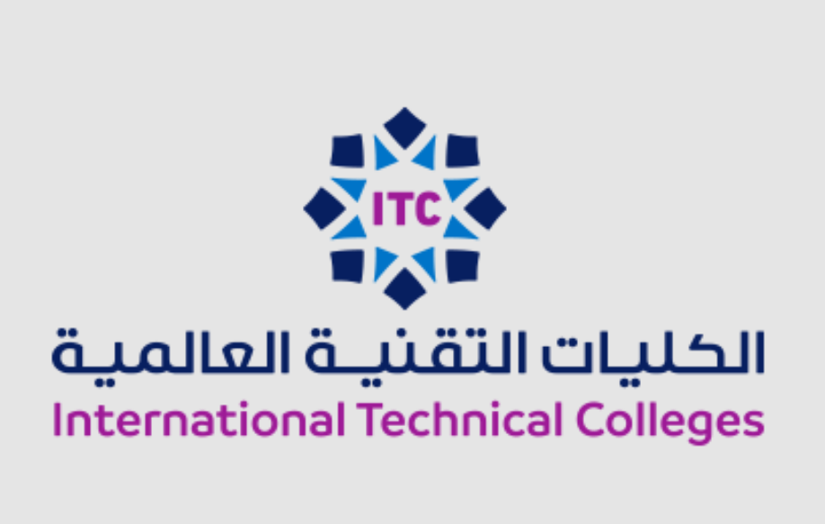
Facilitated hands-on AI/ML workshops focused on core machine-learning concepts for university-level students.
Worked with the Infrastructure Testing & Quality department on stress-testing operational systems, developed a digital-transformation challenges roadmap, and built an LSTM congestion-forecasting simulator.
Selected credentials in AI, machine learning, deep learning, databases, and cloud.
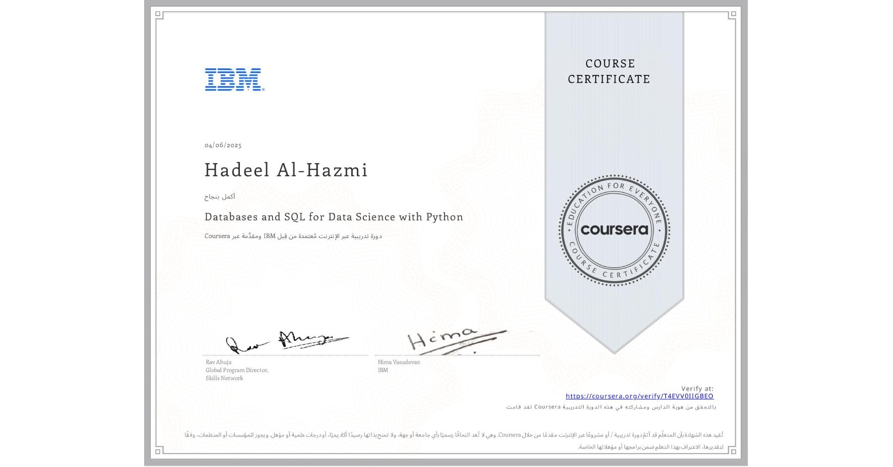
IBM · Coursera
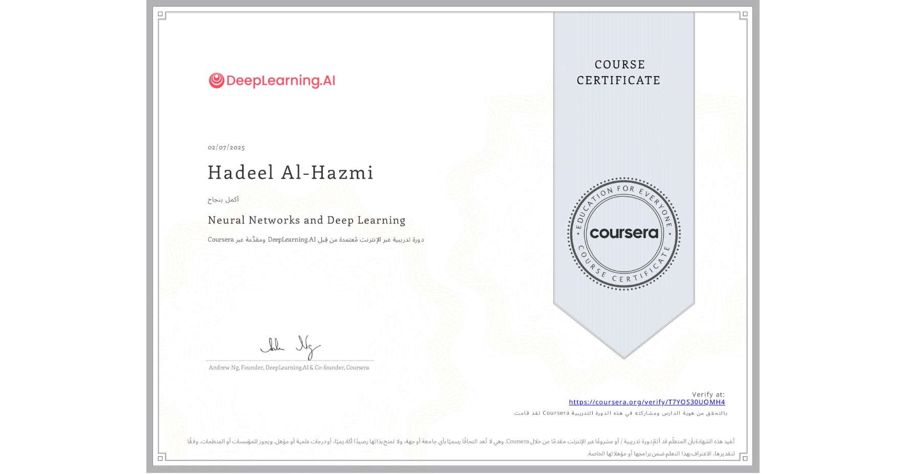
DeepLearning.AI · Coursera
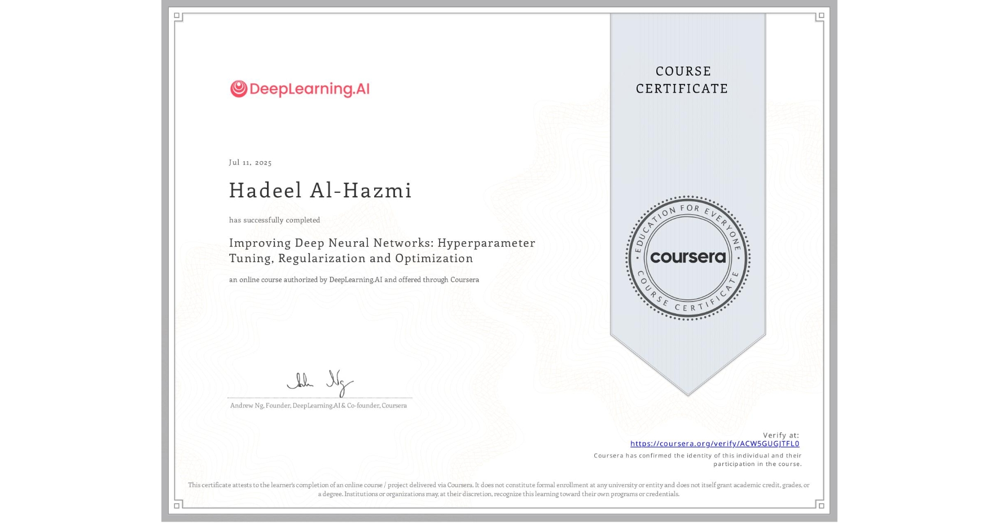
DeepLearning.AI · Coursera
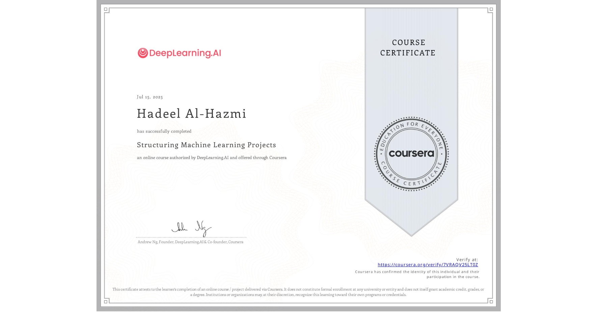
DeepLearning.AI · Coursera
DeepLearning.AI · Coursera
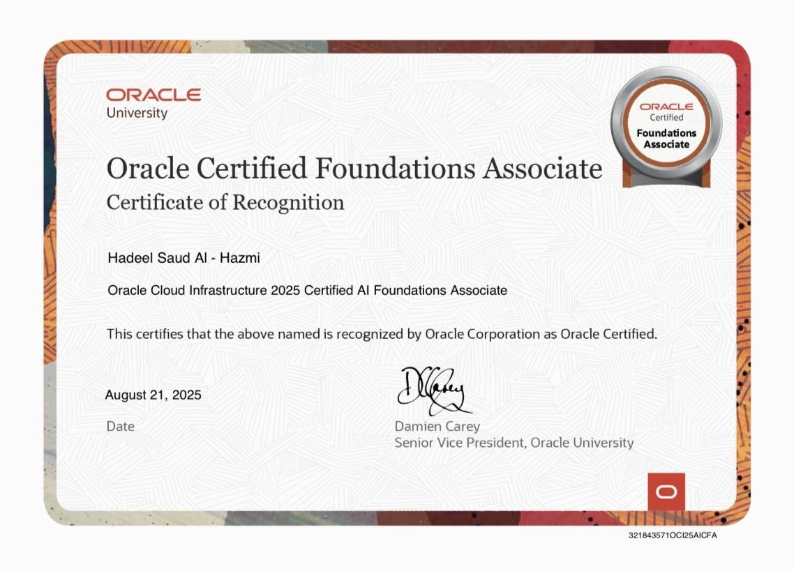
Oracle
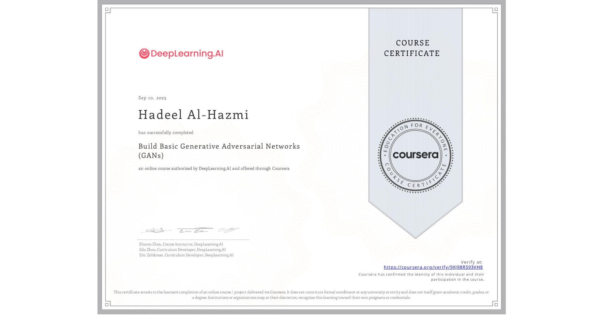
DeepLearning.AI · Coursera
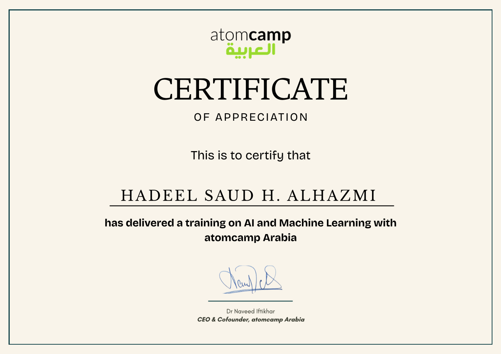
Atomcamp Arabia
Native proficiency
IELTS overall band score: 7.0
Community-focused teaching, mentorship, and industry engagement.
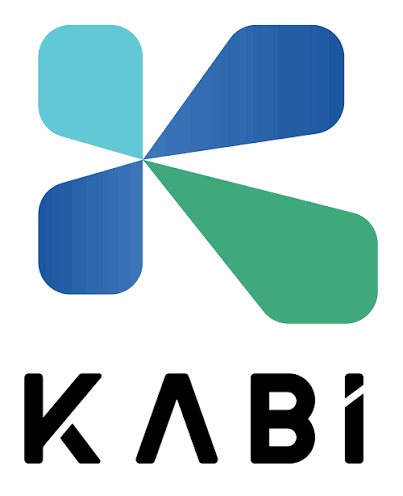
Coordinated an industry session connecting students with co-op training and graduate development opportunities in AI and technology.
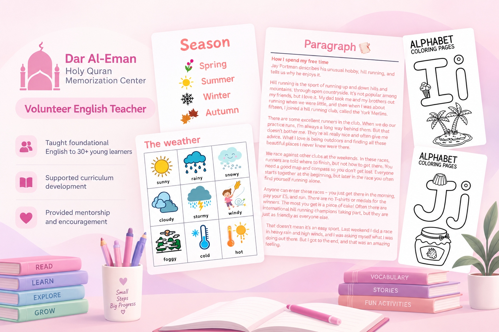
Taught foundational English to 30+ young learners and supported curriculum development and student mentorship.
Tools and technologies used across AI systems, backend development, automation, and machine learning.
LLMs · RAG · AI Agents · OpenAI API · Function Calling · Prompt/Context Engineering · NLP · Computer Vision
Python · FastAPI · Webhooks · Supabase
n8n · JMeter · Grafana · ngrok · Render
HTML/CSS · Bootstrap · Jinja2
SQL · Pandas · Scikit-learn
Curriculum Design & Delivery · Workshop Facilitation · AI/ML Training · Mentorship · Public Speaking
Interested in AI systems, intelligent agents, research, or building something together? Feel free to reach out.